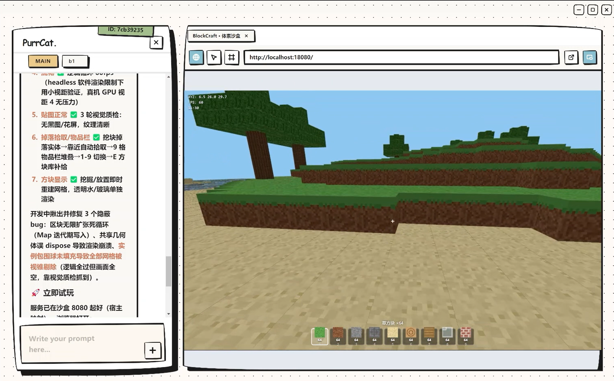

1. 多源信息聚合
每天早晨，Agent 自动抓取你订阅的 RSS、arXiv 新论文、竞品官网更新、特定论坛帖子，按你关心的维度过滤，生成摘要简报。
2. 学术与笔记辅助
在理科课堂或阅读文献时，遇到复杂的数学公式或代码逻辑，你可以做个简单标记，随后指挥 Agent 在后台帮你整理、推导或格式化笔记。
3. 整理飞书表格、文件、信息等
许多像飞书这样的官方平台都提供了开源的 CLI（命令行工具）。由于 Agent 在其专属的隔离沙盒内拥有绝对的执行权限，它完全可以「自我武装」——直接在终端为自己安装并配置这些外部 CLI。
将这种沙盒级别的命令执行能力与特定的 Skill 结合，Agent 便能原生对接并自动化处理复杂的云端表格、文档与信息聚合任务，轻松打破应用孤岛。
4. 协助分析金融数据
接入社区的金融 Harness Engineering 的拓展工作流，可以让你的 Agent 具备较强的专业分析能力，能帮你省下许多时间和精力。
5. 定时维护项目、监控项目健康
PurrCat 内置心跳（Heartbeat）功能，可以设定一定间隔自动醒来，调取 GOAL.md 待办目标，自动监控项目健康程度、清理垃圾、修复 TODO/FIXME，实现无人值守自主迭代。
